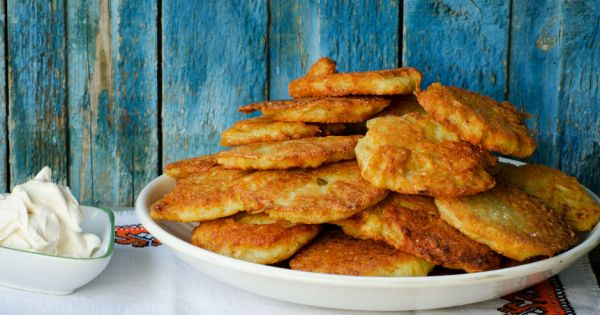
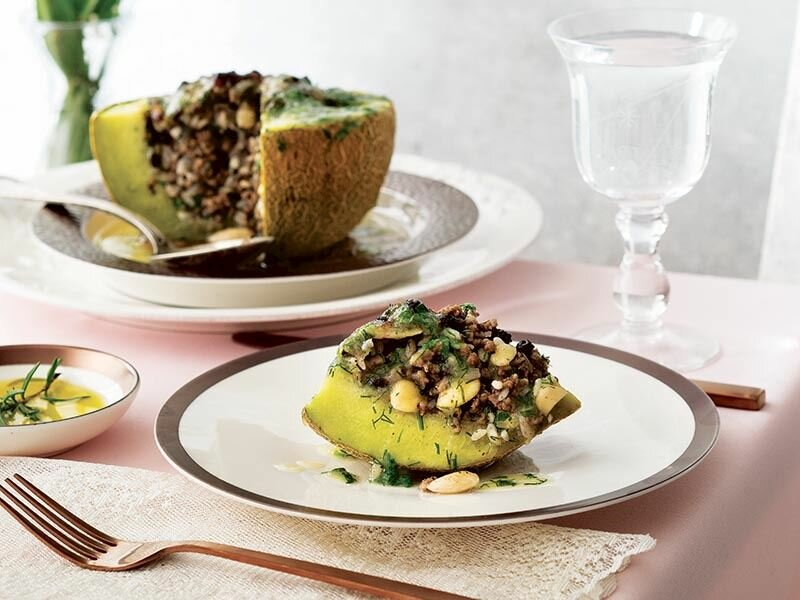
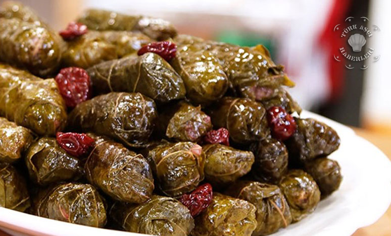

Yumurta-yı Hümayun

Yumurta-yı Hümayun bir Osmanlı yemeği, aslında anlatıldığı kadarıyla dönem padişahlarının gözdesi hatta bir hanedan geleneğiymiş.
Ramazan sofralarında mutlaka bulunur, gelen önemli misafirlere de ikram edilirmiş. Hatta bazı padişahlar bu yemeği iyi yapanları ödüllendirirlermiş.
Lalanga

Kökleri Osmanlı'ya kadar dayanan bu lezzet, farklı tarif ve isimlerle karşımıza çıkabiliyor. Mantığı çok pratik.
Aynı oranda süt, un ya da süt-un ve yoğurdu,yine aynı oranda yumurta ile buluşturarak bir harç hazırlamak. Ardından da damak zevkine
bağlı olarak içerisine kaşar peyniri ilave etmek.
Kavun Dolması

Kavun dolması,kavunun içi doldurularak yapılan etli dolmadır. 15. ve 16. yüzyıl Osmanlı saray mutfağında önemli bir yere sahiptir.
Fatih Sultan Mehmet’in en sevdiği yemeklerden birisidir. Kavun Dolması, 1539 yılının Kasım ayının ikinci yarısında yapılan,
Kanuni Sultan Süleyman'ın oğulları Şah Cihangir ve Beyazıt'ın sünnet düğününde ki çanak yağmasında sunulan ihtişamlı bir yemektir.
Vişneli Yaprak Sarma

Vişneli Yaprak Sarma Osmanlı saray mutfağında padişah sofralarında ve saray ağalarına verilen önemli ziyafetlerde yemek menülerinde de
sıklıkla yer almıştır. İlerleyen zamanlarda ise Osmanlı ve Türk Mutfağı, Geleneksel Türk Mutfağı,
Yöresel Yemekler, Yöresel Mutfaklar da tencere yemekleri arasında kendi yerini almıştır.